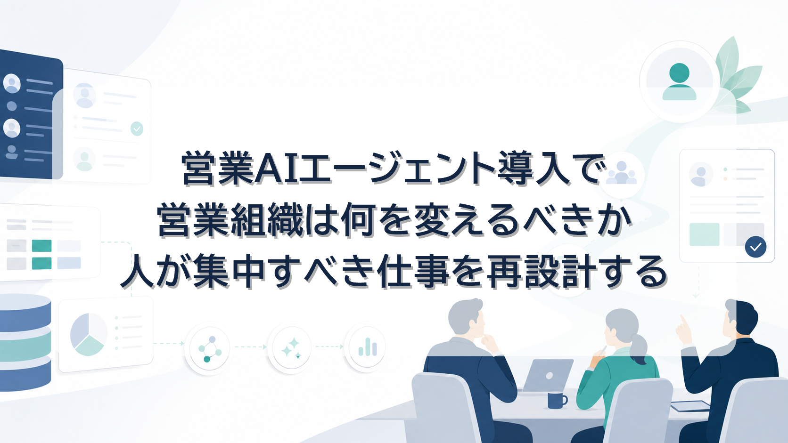
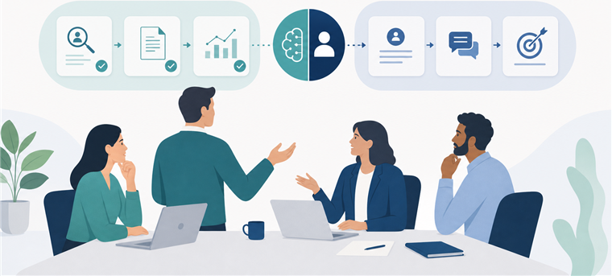
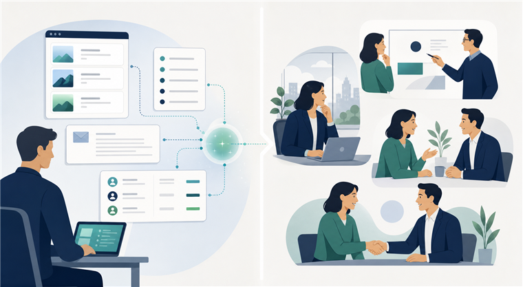
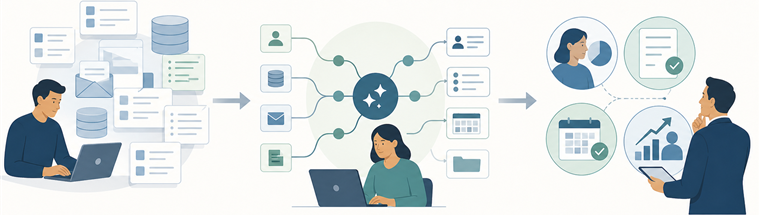
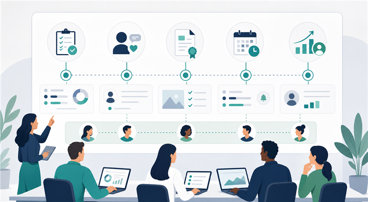

営業AIエージェント導入で営業組織は何を変えるべきか。人が集中すべき仕事を再設計する

みなさんこんにちは、Valorize AI代表の鈴木創也です。
営業AIエージェントを導入するとき、最初に確かめたいのは、AIで短縮した作業時間を、顧客理解、提案判断、合意形成に再投資できるかどうかです。
企業情報を調べる。見込み企業のリストを整える。メール文面の案を作る。商談前の確認項目を整理する。こうした準備業務には、これまで営業担当者が多くの時間を費やしてきました。どれも営業活動に必要ですが、営業担当者が最も時間を使うべきなのは、その先にある顧客理解や提案判断です。
営業の価値は、顧客の状況を読み取り、どの課題に優先して向き合うべきかを判断し、相手の意思決定に合わせて提案を組み立て、合意形成を前に進めることにあります。営業AIエージェントを導入する意味は、顧客理解、優先順位判断、提案設計、合意形成に人が集中できる状態を作ることです。
営業組織にAIを導入する際は、AIで処理する仕事、人が判断する仕事、削減した時間の使い道をあらかじめ設計することが求められます。営業メンバーがAIで生産性を高め、その時間を営業成果につなげるためです。
なぜ今、人とAIの役割分担を決める必要があるのか

営業活動におけるAI活用は、すでに広い企業の現実になりつつあります。HubSpot Japanの「日本の営業に関する意識・実態調査2026」では、営業担当者・営業責任者の生成AI活用率が1年で28.9%から43.4%へ拡大したとされています。
この変化は、便利なツールの増加にとどまりません。買い手も、検索や生成AIを使って事前に情報を集めやすくなっています。一般的な商品説明、機能説明、業界トレンドの整理だけなら、買い手は営業担当者に会う前にかなりの情報を得られます。
一方で、同じHubSpot Japanの調査では、買い手が営業担当者に期待する価値として、個別事情を汲んだ提案、潜在ニーズの引き出し、共感や気配りが挙げられています。つまり、AIや検索で情報が手に入りやすくなるほど、営業担当者には一般説明ではなく、個社ごとの状況に踏み込む力が求められます。
この段階で必要なのは、AIを使うかどうかの議論ではなく、営業メンバーの時間配分をどう変えるかを決めることです。
企業調査、リスト整理、文面の下書き、CRM/SFA入力のような作業は、AIを使うことで短縮しやすくなっています。そこで短縮できた時間を、顧客理解、提案判断、合意形成へ移せるかどうかが、導入後の差になります。
営業AIエージェント導入の成否は、削減できた時間そのものではなく、その時間を顧客理解、提案判断、合意形成へ再投資できるかで決まります。
AIで処理しやすい仕事、人が担うべき仕事

営業AIエージェントで処理しやすい仕事には、一定の共通点があります。情報を集める、整理する、候補を出す、文面案を作る、抜け漏れを確認する。こうした作業は、AIを道具として使いやすい領域です。
たとえば、次のような業務です。
- ターゲット条件に沿った企業リストの作成
- 公開情報、ニュース、採用情報、IR情報などの収集
- 企業概要や事業内容の整理
- 初めて連絡する相手に送る文面案の作成
- 商談前に確認すべき項目の洗い出し
- 商談メモやメール内容をもとにしたCRM/SFA入力補助
Salesforceの「State of Sales Report 2026」では、AIエージェント利用者の多くが、AIの活用によって高付加価値業務に集中できると回答しています。GartnerのSales AIに関する解説も、営業におけるAI活用では、生産性向上を起点にしつつ、AIが出した洞察やメッセージを営業担当者が顧客との対話でどう活用するかが重要だと示しています。
ここで重要なのは、AIを営業活動そのものの代替として扱わないことです。AIが得意なのは、判断材料を速く揃え、整理し、下書きを作ることです。その材料をどう読み、どの顧客にどの提案を優先し、どの言葉で伝えるかは、人間の営業判断として残ります。
人が担うべき仕事は、次のような領域です。
- どの市場、業種、企業群を狙うかの営業戦略
- 顧客の事情を踏まえた優先順位判断
- 提案内容の最終判断
- 顧客との対話、関係構築、合意形成
- AIで作成した情報や文面のレビューと修正
McKinseyは、生成AIがB2B営業の効率、売上成長、顧客体験を改善し得るとしながら、営業活動をより顧客成果に近づける可能性を論じています。ここで起きる変化は、営業担当者の役割縮小よりも、営業担当者がより難しく、成果に近い判断へ集中する方向への移行です。
営業AIエージェントで準備した情報を、そのまま顧客に提示するだけでは価値は生まれません。AIで集めた材料を、人間が営業判断に変える。この分担を営業プロセスの中に組み込めるかどうかが重要です。
導入前に決めるべき3つの設計

営業AIエージェントを導入するとき、ツール選定より先に決めるべきことがあります。少なくとも、次の3つは導入前に設計しておく必要があります。
1. AIで処理する工程を決める
まず、営業活動のどこにAIを入れるのかを工程単位で決めます。
「営業活動をAIで自動化する」と大きく言っても、実務では意味が曖昧です。リスト作成なのか、企業調査なのか、初回メールの文面案なのか、商談準備なのか、CRM/SFA入力補助なのか。工程を分けなければ、AIを使った成果も評価できません。
現行の技術で、営業戦略の設計、顧客との対話、提案の最終判断、合意形成までを丸ごとAIへ任せるのは現実的ではありません。実務で扱いやすいのは、営業メンバーが多くの時間を費やしている準備工程をAIで短縮し、人が判断すべき仕事へ時間を移すことです。
たとえば、商談前の企業調査に毎回時間がかかっているなら、企業情報の整理と課題仮説のたたき台をAIで作る。新規開拓で接触先の選定が属人化しているなら、ターゲット条件に沿った企業リストをAIで作成する。メール文面作成に時間がかかっているなら、AIで下書きを作り、人間が接触理由、相手の状況、表現の妥当性を確認する。
このように、AIで処理する工程を具体化して初めて、削減した時間をどこへ再投資するかを設計できます。
2. 人が確認する場面を決める
営業AIエージェントは、顧客情報、商談情報、提案内容、メール文面に関わります。だからこそ、工程ごとに確認対象と確認の深さを決める必要があります。
経済産業省・総務省の「AI事業者ガイドライン」は、企業がAIを安全安心に活用するための考え方として、人間中心、安全性、透明性、アカウンタビリティなどの観点を示しています。営業領域で考えるなら、これはAI出力の確認者と確認タイミングを決めることに直結します。
たとえば、複数社へ同じ条件で連絡する場合は、事前に品質テストや送信ルールを決めたうえで、個別確認を省く運用もあり得ます。一方で、重要顧客への接触、個別提案、商談内容を踏まえた文面、CRM/SFAに残す重要情報では、人間の確認を厚くする必要があります。Microsoftの「2025 Work Trend Index」でも、AI時代の組織運営では、人とAIエージェントを組み合わせた業務プロセスの再設計が重要なテーマとして扱われています。
人が確認する場面は、すべての作業を止めるためではなく、顧客接点で使う情報の品質を保つために設けます。重要なのは、確認を一律に増やすことではありません。リスクが低い反復作業はルール化し、営業成果や顧客信頼への影響が大きい場面では人が判断する。この濃淡を設計することです。
AIの出力をすべて疑う必要はありません。しかし、営業成果と顧客信頼に関わる地点では、人間が責任を持って判断する。この前提を曖昧にしないことが、現場運用の品質を左右します。
3. 削減した時間の使い道を決める
AIで作業時間が減っても、その時間が空白のままなら営業成果は変わりません。削減された時間は、営業工程全体を見たときに重要だと分かっていながら、これまで手を出せていなかった領域へ再配分する必要があります。
たとえば、重点顧客の攻略方針を詰める。意思決定者、利用部門、情報収集担当者の関係を整理する。過去の失注理由を見直し、次の提案で避けるべき懸念点を明確にする。既存顧客に対して、追加提案や活用定着の余地を探る。商談後のフォローを早くするだけでなく、相手の検討状況に合わせて次に出すべき情報を整える。
これらは、削減元の作業を少し丁寧にするための時間ではありません。営業工程全体を見たときに、成果への影響が大きいにもかかわらず、日々の準備作業に押されて後回しになりやすい仕事です。
削減した時間の再配分を決めずにAIを導入すると、作業時間は短くなっても営業成果にはつながりません。営業組織として確認すべきなのは、削減した時間によって、顧客理解、提案品質、商談化率、フォロー速度、既存顧客への提案の深さがどう変わったかです。
営業AIエージェントの価値は、作業時間の短縮以上に、顧客理解、提案判断、商談後フォロー、既存顧客への追加提案に使える時間を増やす点にあります。
生産性向上を成果につなげる運用基準

AI導入後に確認すべきなのは、利用回数や作業時間の短縮量だけではありません。営業メンバーの時間の使い方が変わり、成果につながる営業行動が組織の標準になっているかです。
確認する対象は、次のような変化です。
- 重点顧客について、攻略方針や関係者の整理が進んでいるか
- 商談前に、顧客の状況、想定課題、意思決定上の懸念を確認できているか
- 提案前に、相手の事情に合わせて伝える順序や材料を調整できているか
- 商談後に、次回アクション、追加で出すべき情報、フォロー時期が明確になっているか
- 既存顧客に対して、追加提案や活用定着の機会を見つけられているか
この変化を個人の工夫だけに任せると、AI活用は一部のメンバーだけの取り組みにとどまります。あるメンバーはAIで顧客情報を整理し、商談前の仮説や提案材料を深める。一方で、別のメンバーは企業情報の収集、見込み企業リストの整理、メール文面の下書き、商談前の確認項目作成、CRM/SFAの整理にこれまで通り時間を使い続ける。その状態では、営業組織として生産性を上げたとは言えません。
必要なのは、成果につながるAIの使い方を営業プロセスの中に組み込むことです。商談前にはどの情報をAIで整理し、何を人が確認するのか。新規接触前にはどの材料を使って仮説を立てるのか。提案前には、相手の事情に合わせて何を人が判断するのか。商談後には、次回アクションや追加で出すべき情報をどう決めるのか。こうした基準を工程ごとに決める必要があります。
営業AIエージェントを導入しても、商談前の仮説が浅いままなら成果にはつながりません。メール文面を速く作れても、相手にとって接触理由が弱ければ商談化の確度は上がりません。AIで行動量が増えても、顧客理解や提案判断が伴わなければ、営業品質は上がりません。
だからこそ、AI活用は作業時間を減らす取り組みにとどめず、顧客理解、提案判断、商談後フォロー、既存顧客への追加提案まで含めた営業行動の基準を更新する取り組みとして扱うべきです。
Sales Triggerで営業準備を整える
私たちValorize AIが提供するSales Triggerは、営業メンバーが顧客と向き合う前の準備を整えるためのサービスです。
Sales Triggerでは、人間が決めたターゲット方針に沿って、企業リスト作成、個社ごとの情報調査、事業内容に合わせた提案準備を進められます。営業担当者が一社ずつ情報を集め、整理し、提案のたたき台を作る時間を減らし、顧客理解や提案判断に時間を使いやすくするための仕組みです。
営業担当者が本来集中すべきなのは、顧客の状況を読み取り、何を提案すべきかを判断し、合意形成を進める仕事です。その前段にある企業調査、接触先整理、提案仮説のたたき台作成を効率化できれば、重点顧客への向き合い方や商談後のフォローに時間を回しやすくなります。
営業準備を整え、営業メンバーが顧客理解や提案判断に使える時間を増やしたい場合は、Sales Triggerのサービスページをご覧ください。
https://salestrigger.valorize-ai.com/
まとめ
営業AIエージェント導入時に重視すべき基準は、作業時間の短縮量だけではありません。重要なのは、AIで削減した時間を、顧客理解、提案判断、対話、合意形成へ再投資できるかどうかです。
AIで処理しやすい仕事は、企業調査、リスト作成、商談準備、文面案作成、入力補助などです。人が集中すべき仕事は、営業戦略、顧客ごとの優先順位判断、提案の最終判断、関係構築、合意形成です。
先に決めるべきことは明確です。AIで処理する工程を決める。人が確認する場面を決める。削減した時間をどの高価値領域へ移すかを決める。そして、AI導入後に顧客理解、提案品質、フォロー、既存顧客への追加提案がどう変わったかを確認する。
営業AIエージェントは、営業メンバーがAIを使い、顧客理解、提案判断、合意形成に使える時間を増やすための仕組みです。導入判断の基準を「営業メンバーが成果に直結する仕事へ時間を使えるか」に置ける営業組織ほど、AIを営業成果を高める基盤として使えるはずです。